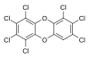

1,2,3,4,6,7,8-heptachlorodibenzo-p-dioxin

Definition: 1,2,3,4,6,7,8-Heptachlorodibenzo-para-dioxin (often referred to as 1,2,3,4,6,7,8-HpCDD) is a polychlorinated derivative of dibenzo-p-dioxin and can therefore be categorized as polychlorinated dibenzo-p-dioxin (PCDD), a subclass of dioxins which includes 75 congeners. HpCDD is the dibenzo-p-dioxin which is chlorinated at positions 1, 2, 3, 4, 6, 7, and 8. It is a polycyclic heterocyclic organic compound, since HpCDD contains multiple cyclic structures (two benzene rings connected by a 1,4-dioxin ring) in which two different elements (carbon and oxygen) are members of its rings. HpCDD has molecular formula C12HCl7O2 and is an off-white powder, which is insoluble in water.
Source: Wikipedia
Wikipedia Page (Something wrong with this association? Let us know.)
Wikidata Page (Something wrong with this association? Let us know.)